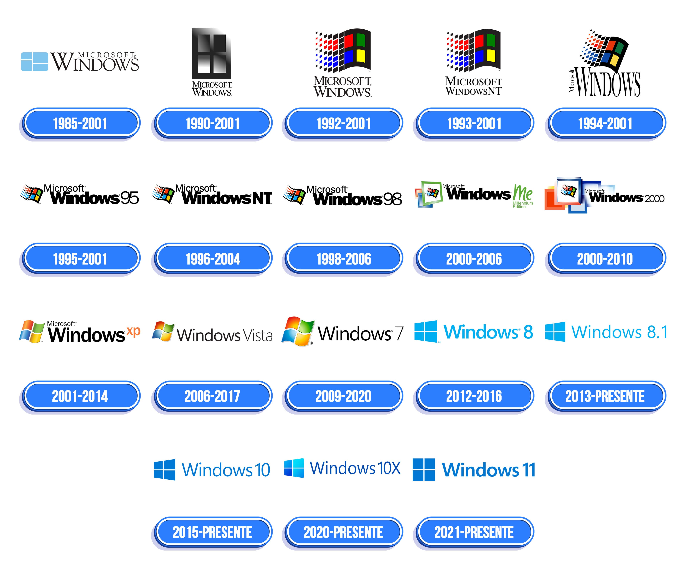

SOBRE O SITE
Este site foi criado para demonstrar o uso do HTML e CSS na prática. O tema escolhido foi "Evolução do Windows". Não foram colocadas todas as versões do Windows, pois não seria necessário, pelo seguinte motivo de que o site é apenas uma demonstração.
SOBRE MIM
Sou Vitor de Sousa, estudante de Informática da 1ª série da EEEP Professor Antônio Valmir da Silva. Nasci em Caucaia, Ceará.
